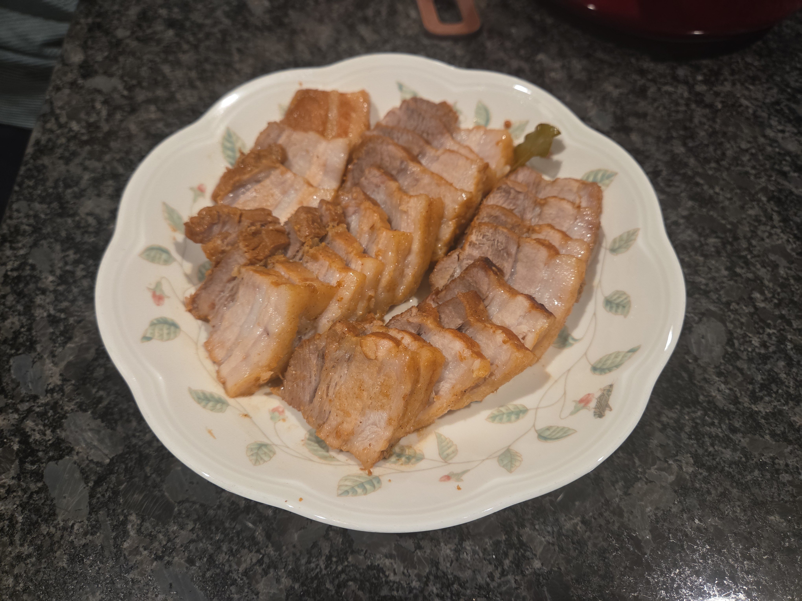

Home
Korean Boiled Pork Belly

Description
Korean boiled pork belly (bossam) is is a dish made with pork simmered with aromatics.
I got this recipe from my mom, so some measurements may not be exact.
Ingredients
- Pork belly
- Fermented soybean paste (doenjang)
- ~20 peppercorns
- 4-5 laurel leaves
- Cinnamon or cinnamon powder
- ~10 cloves of garlic
- An onion
- Some green onion roots
Steps
- Get a pot and fill it with water to the height where the pork belly would just barely be completely submerged.
- Turn the heat to high, and add a large spoonful of soybean paste, ~20 peppercorns, 4-5 of laurel leaves, a bit of cinnamon or cinnamon powder, ~10 cloves of garlic, one onion, and a bit of green onion leaves.
- When the water starts to boil, put in the bork belly, put on the lid, and boil for 15 minutes on high heat, 15 more on medium, and 10 more on low.
- Eat with vegetables, kimchi, and/or ssamjang (Korean dipping sauce)!